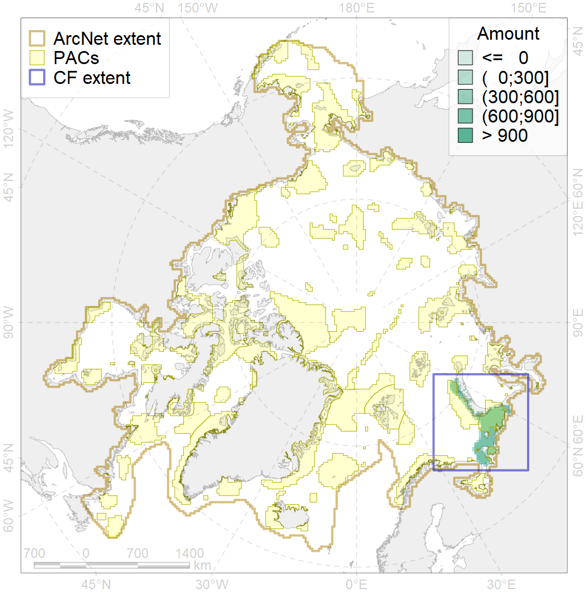
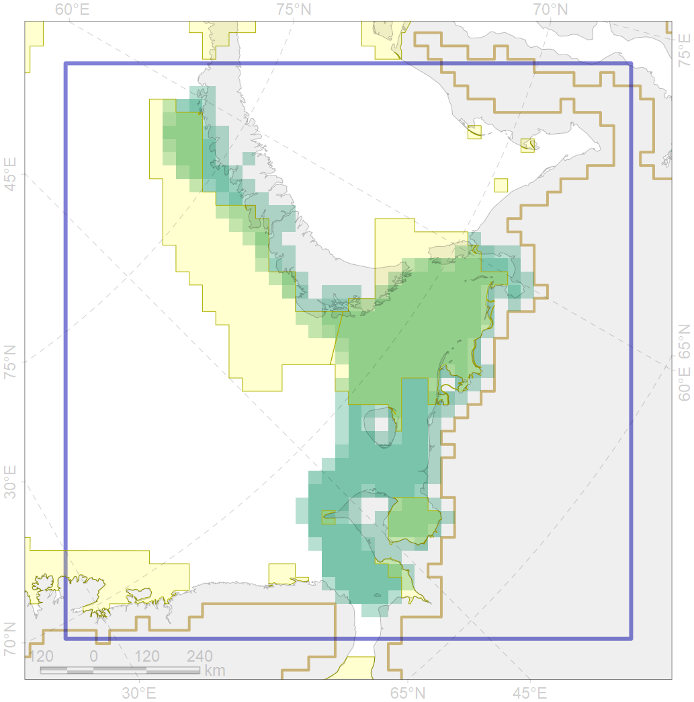

2041

| CF ID | 2041 |
| CF Name | Ringed seal whelping areas in the Barents Sea |
| Time Period | Varies by dataset |
| Source(s) | Surrogate data; sea ice conc files by Will Merritt prepared based on https://nsidc.org/data/seaice_index, bathymetry from http://www.naturalearthdata.com/downloads/10m-physical-vectors/ |
| Seasonality | March-June |
| Depth Horizon | 0-400 m |
| Methodology | Field surveys, data compilation, habitat preference research, traditional knowledge, expert input |
| Author Name | Irina Trukhanova |
| Notes | |
| Conservation Target Set in the Scenario | 0.24 |
| Conservation Target Achieved in the Scenario | 0.564 (Scenario: 235.1%) |
| PAC ID | Proportion in the PAC | Contribution to ArcNet Target Achievement | PAC’s Contribution to the Achieved Target |
|---|---|---|---|
| 20 | 42.0% | 168.5% | 71.7% |
| 21 | 8.4% | 31.7% | 13.5% |
| 23 | 5.0% | 18.3% | 7.8% |
| 24 | 0.9% | 3.5% | 1.5% |
| 25 | 0.3% | 0.7% | 0.3% |
| inner | 56.7% | 222.7% | 94.7% |
| outer | 43.3% | 12.4% | 5.3% |